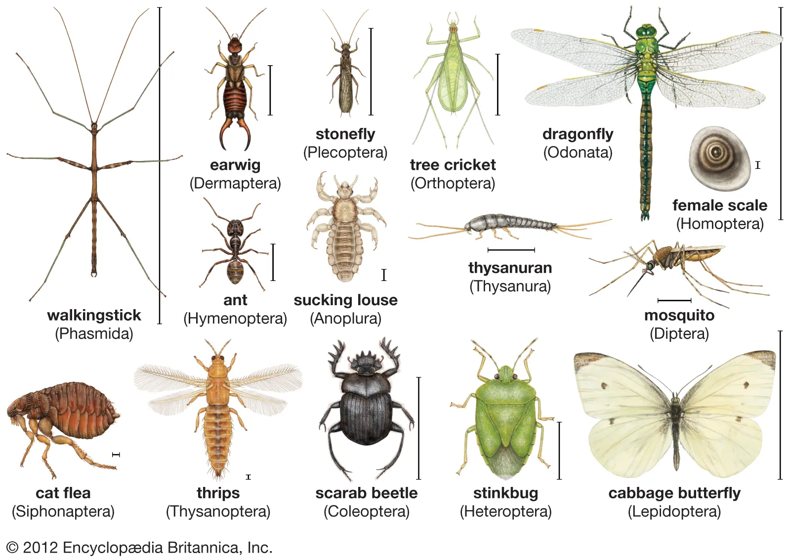
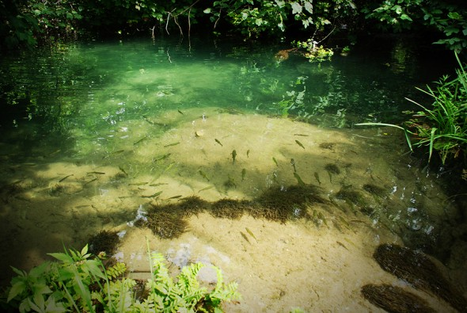

1 • Definição e importância
O que são GFTs?
Os Grupos Funcionais Tróficos (GFTs) classificam macroinvertebrados de riachos conforme:
• o tipo de alimento consumido;
• a forma como o obtêm.
Eles são fundamentais para compreender o funcionamento ecológico dos ambientes aquáticos e são amplamente usados como indicadores da qualidade da água.
2 • Principais grupos
Principais GFTs
• Fragmentadores: consomem matéria orgânica grosseira, como folhas e galhos.
• Coletores: capturam partículas finas, filtrando ou catando no fundo.
• Raspadores: removem algas e biofilme aderidos às superfícies.
• Sugadores: extraem fluidos de plantas ou animais.
• Predadores: capturam e consomem outros macroinvertebrados.

3 • Alimentação obrigatória x facultativa
Estratégias Alimentares
• Alimentação obrigatória: o organismo depende de um único tipo de alimento; possui dieta fixa.
• Alimentação facultativa: o organismo pode alterar sua dieta conforme a disponibilidade de recursos no ambiente.

4 • Papel na Avaliação Ambiental
O que revelam os GFTs?
A composição dos GFTs indica a saúde ecológica de um riacho:
• Ambientes preservados apresentam maior diversidade e equilíbrio entre os grupos.
• Ambientes poluídos tendem a perder raspadores e fragmentadores, enquanto aumentam os coletores.